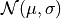
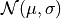

Parameter Estimation for a Binomial Distribution¶
Introduction¶
This chapter illustrates the uses of parameter estimation in generating Binomial distribution for a set of measurement, and investigates how the change of parameter b (explained below) will change the probability result. In astronomical application, we can use this binary result distrinution to statistically determine the fraction of galaxies which show evidence for a black hole in their center. This chapter will compare the conclusion drawn from Binomial distribution and from Gaussian distribution using a sample data.
Binomial Distribution¶
Unlike the Gaussian distribution, which describes the distribution of a continuous variable, the binomial distribution describes the distribution of a variable that can take only two discrete values (say, 0 or 1, or success vs. failure, or an event happening or not). If the probability of success is b, then the distribution of a discrete variable k (an integer number, unlike x which is a real number) that measures how many times success occurred in N trials (i.e., measurements), is given by
Here we have the mean of the binomial distribution given by .
The standard deviation is .
And the uncertainty (standard error) is .
Posterior probability distribution in binomial distribution¶
Given a set of N measurements (or trials),  , drawn from a binomial distribution described with parameter b, we seek the posterior probability distribution ).
, drawn from a binomial distribution described with parameter b, we seek the posterior probability distribution ).
When N is large, b and its (presumably Gaussian) uncertainty can be determined using the equation above. For small N, the proper procedure is as follows. Assuming that the prior for b is at in the range 0-1, the posterior probability for b is
where k is now the actual observed number of successes in a data set of N values, and C is a normalization factor with
can be determined from the condition  .
The maximum posterior occurs at .
.
The maximum posterior occurs at .
Import Data and Functions¶
import numpy as np
import matplotlib
from scipy.stats import norm
from matplotlib import pyplot as plt
Define functions and calculate result from data¶
Here we vary the b value and draw the resulted posterior probability distribution from our data set. The equation is described below: $$ In comparison, we also calculate a Gaussian distribution from the same data set.
n = 10 # number of points
k = 4 # number of successes from n draws
b = np.linspace(0, 1, 100)
db = b[1] - b[0]
# compute the probability p(b)
p_b = b ** k * (1 - b) ** (n - k)
p_b /= p_b.sum()
p_b /= db
cuml_p_b = p_b.cumsum()
cuml_p_b /= cuml_p_b[-1]
# compute the gaussian approximation
p_g = norm(k * 1. / n, 0.16).pdf(b)
cuml_p_g = p_g.cumsum()
cuml_p_g /= cuml_p_g[-1]
Show comparison result¶
The solid line in the left panel shows the posterior pdf for k = 4 and N = 10. The dashed line shows a Gaussian approximation.
The right panel shows the corresponding cumulative distributions.
In comparison, a value of 0.1 is marginally likely according to the Gaussian approximation ((< 0.1) 0.03) but strongly rejected by the true distribution ((< 0.1) 0.003).
# Plot posterior as a function of b
fig = plt.figure(figsize=(10, 5))
fig.subplots_adjust(left=0.11, right=0.95, wspace=0.35, bottom=0.18)
ax = fig.add_subplot(121)
ax.plot(b, p_b, '-b')
ax.plot(b, p_g, '--r')
ax.set_ylim(-0.05, 3)
ax.set_xlim(0,1)
ax.set_xlabel('$b$')
ax.set_ylabel('$p(b|x,I)$')
ax = fig.add_subplot(122, yscale='log')
ax.plot(b, cuml_p_b, '-b')
ax.plot(b, cuml_p_g, '--r')
ax.plot([0.1, 0.1], [1E-6, 2], ':k')
ax.set_xlabel('$b$')
ax.set_ylabel('$P(<b|x,I)$')
ax.set_ylim(1E-6, 2)
ax.set_xlim(0,1)
plt.show()
Log-likelihood for Binomial Distribution¶
Suppose we have N measurements, . The measurement errors are gaussian, and the measurement error for each
measurement is  . This method applies logrithm in searching the posterior probability density function (pdf).
Given that the likelihood function for a single measurement,
. This method applies logrithm in searching the posterior probability density function (pdf).
Given that the likelihood function for a single measurement,  , is assumed to follow a Gaussian
distribution , the likelihood for all measurements is given by
$$
, is assumed to follow a Gaussian
distribution , the likelihood for all measurements is given by
$$
# Define the function for calculating log-likelihood Binomial distribution
def bi_logL(b, k, n):
"""Binomial likelihood"""
return np.log( b**k * (1-b)**(n-k) )
# Define the grid and compute logL
b = np.linspace(1, 5, 70)
k = np.linspace(1, 5, 70)
n = 70
logL = bi_logL(b, k, n)
logL -= logL.max()
plot result¶
fig = plt.figure(figsize=(5, 3.75))
plt.imshow(logL, origin='lower',
extent=(b[0], b[-1], k[0], k[-1]),
cmap=plt.cm.binary,
aspect='auto')
plt.colorbar().set_label(r'$\log(L)$')
plt.clim(-5, 0)
plt.contour(b, k, convert_to_stdev(logL),
levels=(0.683, 0.955, 0.997),
colors='k')
plt.text(0.5, 0.93, r'$L(\mu,\sigma)\ \mathrm{for}\ \bar{x}=1,\ V=4,\ n=10$',
bbox=dict(ec='k', fc='w', alpha=0.9),
ha='center', va='center', transform=plt.gca().transAxes)
plt.xlabel(r'$\mu$')
plt.ylabel(r'$\sigma$')
plt.show()